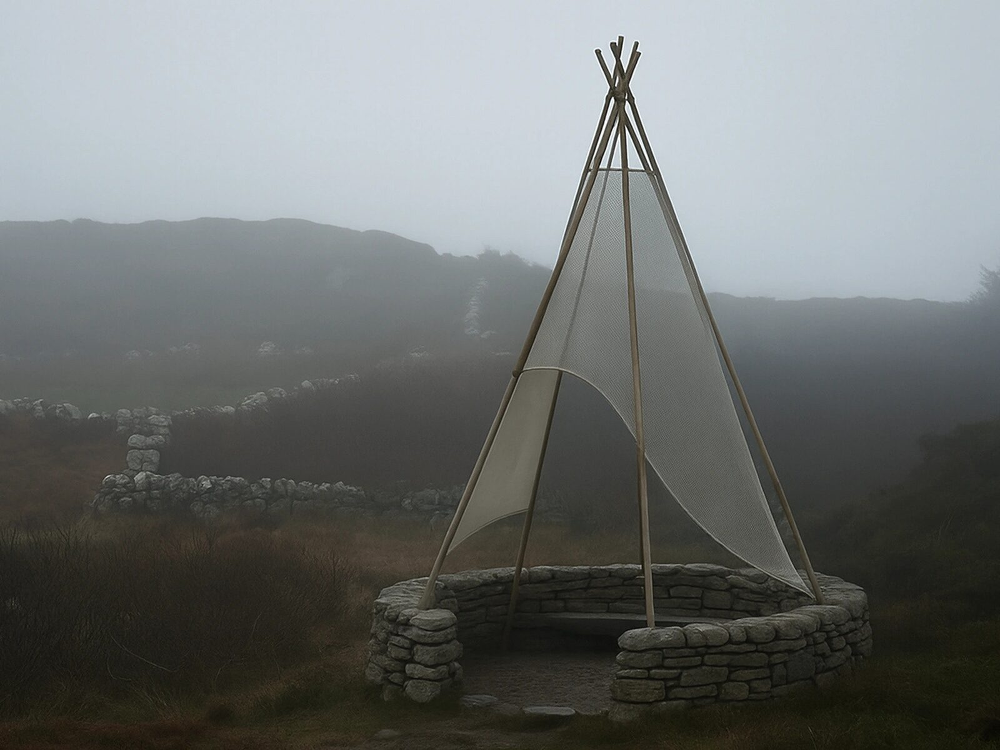
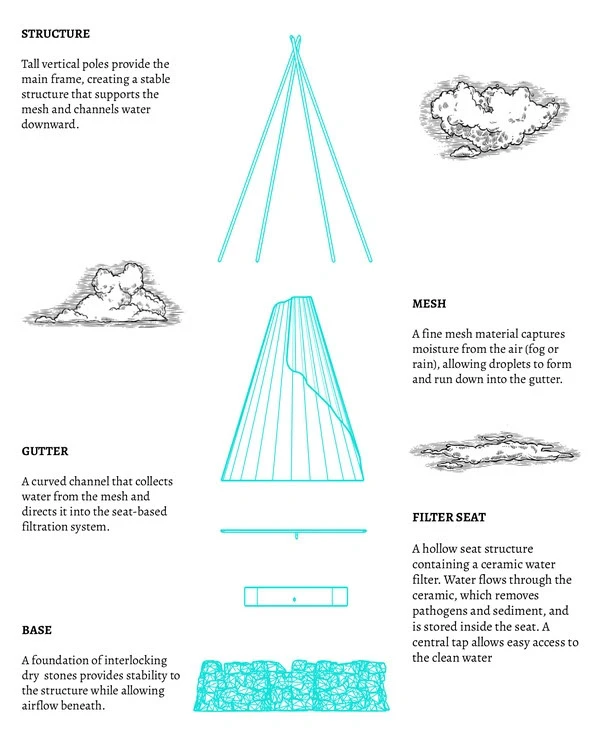

“A spoon of the fog” — a fog collector and rest point for island landscapes.
Spúnóg den Cheo was a concept submitted to the LINA community's yearly open call. It grew out of time spent on Sherkin Island, and a love of its fog-covered landscape.
Spúnóg den Cheo (“spoon of the fog”, in Irish) is a fog collector and rest point designed for island landscapes — places where water is both abundant in the air and yet scarcely available.
Its name is drawn from the image of someone tasting a spoonful of fog and being content: a picture that captures the project's blend of practicality, poetics and place.

